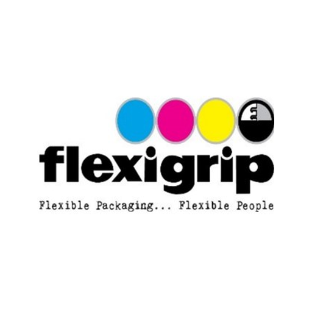

Llena, ilustra con fotos y exporta a Word o PDF los formatos controlados.
Tema, participantes con firma, resumen, evidencia fotográfica libre y compromisos con responsable y fecha.
Datos de la estructura y la máquina, pruebas aprobadas o no, observaciones, acuerdos, participantes con firma y evidencia fotográfica.
En iPhone: abre en Safari, toca Compartir y elige «Agregar a pantalla de inicio».